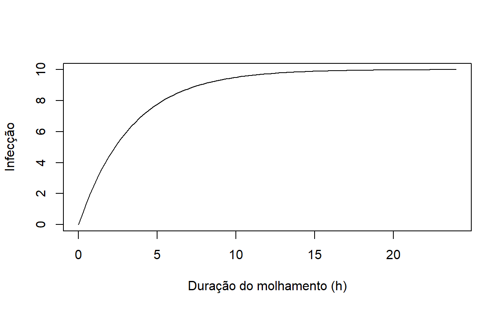
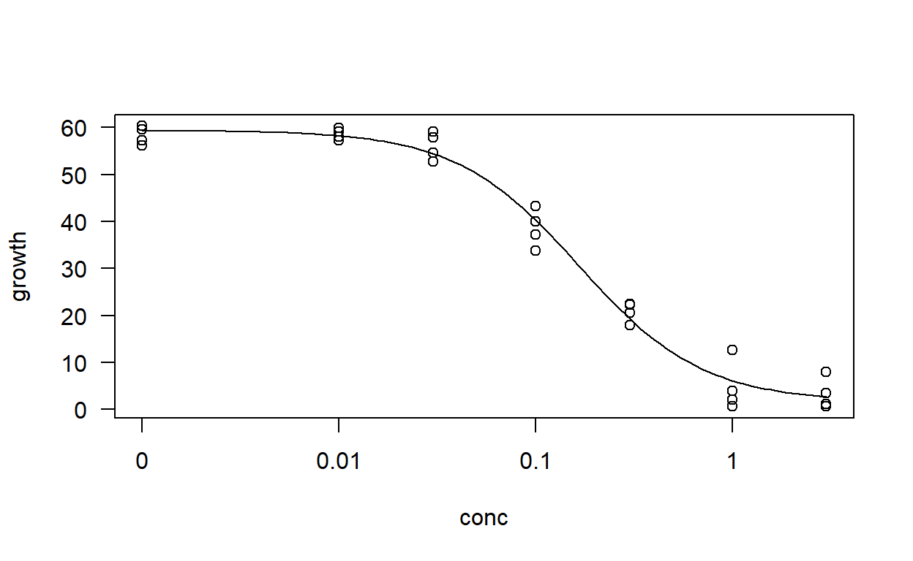
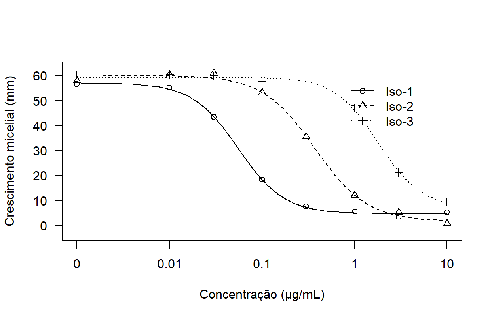
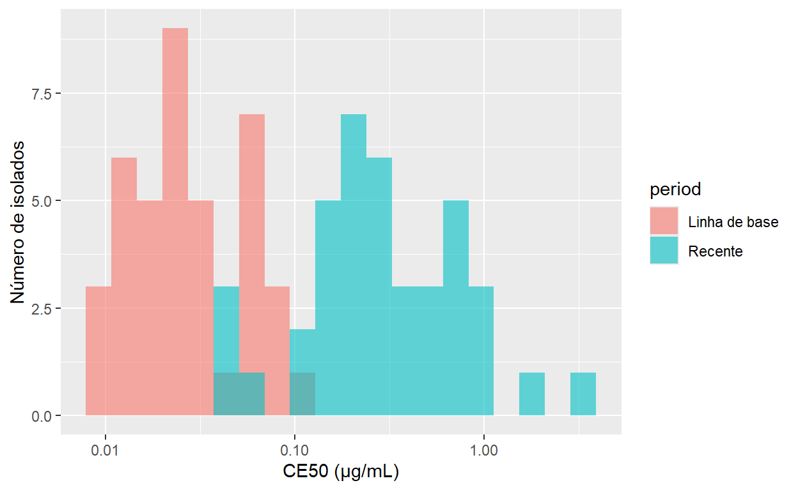
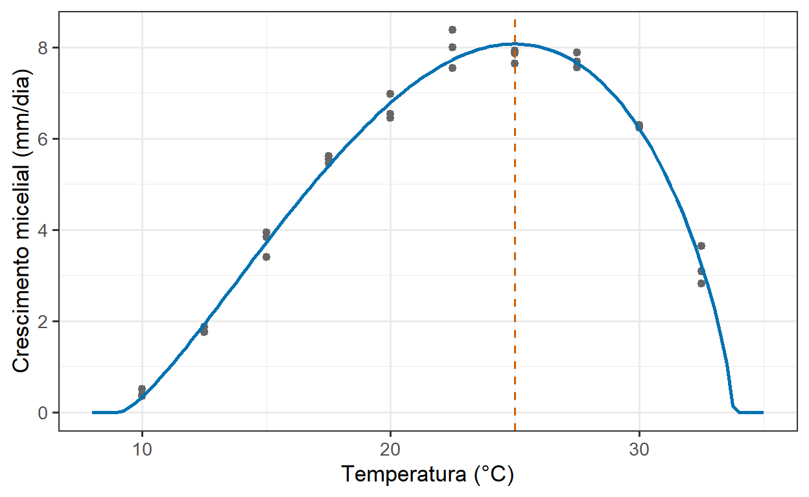
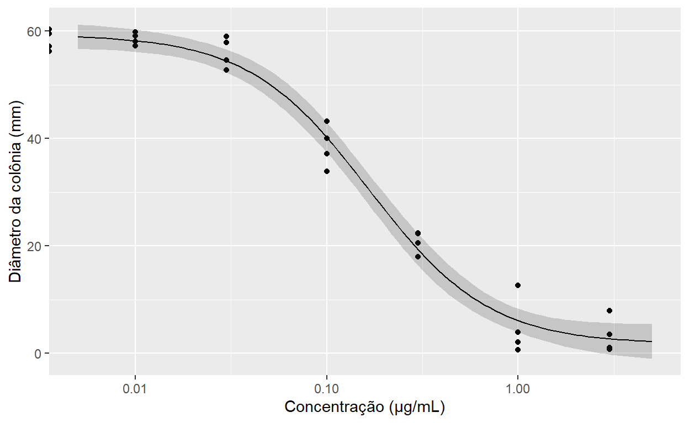
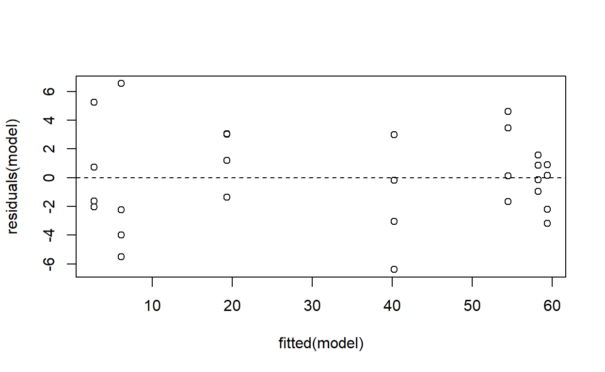

9 Como analisamos respostas não lineares?
9.1 Objetivos de aprendizagem
Importante
Ao concluir este capítulo, o leitor deverá ser capaz de:
- reconhecer respostas biológicas intrinsecamente não lineares;
- explicar por que retas e polinômios costumam descrever mal essas respostas;
- descrever formas comuns de curvas não lineares e o significado biológico de seus parâmetros;
- ajustar e interpretar modelos de dose–resposta e estimar valores de CE50;
- distinguir concentrações efetivas absolutas e relativas;
- comparar curvas de dose–resposta e valores de CE50 entre isolados ou tratamentos;
- ajustar modelos que descrevem respostas à temperatura e a outras variáveis ambientais;
- compreender como os modelos não lineares são ajustados, incluindo o papel dos valores iniciais;
- quantificar a incerteza dos parâmetros do modelo e de grandezas derivadas;
- escolher entre modelos não lineares concorrentes usando critérios biológicos e estatísticos;
- delinear experimentos que permitam estimar com precisão os parâmetros não lineares;
- comunicar análises não lineares usando estimativas dos parâmetros, incerteza e curvas ajustadas.
9.2 Por que respostas não lineares?
O Capítulo 8 descreveu relações em que a resposta muda a uma taxa constante com a variável explicativa. Muitas respostas biológicas não se comportam assim. Elas sobem e depois se estabilizam, decrescem em direção a um piso, seguem uma curva em forma de S ou atingem um máximo em um valor intermediário.
Exemplos típicos em Fitopatologia incluem:
- sensibilidade a fungicidas: o crescimento micelial ou a germinação de esporos diminui com a concentração do fungicida, devagar no início, depois rapidamente, e então se aproxima de um mínimo;
- respostas à temperatura: o crescimento, a germinação ou a infecção aumentam com a temperatura até um ótimo e diminuem além dele;
- densidade de inóculo: a infecção aumenta com a concentração de inóculo, mas se satura quando a maioria dos sítios suscetíveis já está infectada;
- duração do molhamento foliar: a proporção de folhas infectadas aumenta com a duração do molhamento e se aproxima de um platô;
- progresso da doença: a doença aumenta devagar, depois rapidamente, e então se aproxima de um máximo ao longo da safra.
Em cada caso, a forma da resposta não é um incômodo a ser eliminado por uma transformação. A forma é a biologia. A curva nos diz em que concentração um patógeno é inibido, em que temperatura cresce melhor ou quanto inóculo é necessário para causar doença.
Importante
O objetivo da modelagem não linear não é simplesmente desenhar uma curva sobre os dados. É estimar parâmetros com significado biológico, como uma concentração efetiva, uma temperatura ótima ou uma resposta máxima, e quantificar sua incerteza.
9.3 Da questão biológica ao parâmetro da curva
Considere um ensaio de laboratório em que o crescimento micelial de um isolado fúngico é medido em meio de cultura com concentrações crescentes de fungicida.
Aqui o estimando não é uma diferença entre médias (Capítulo 7) nem uma inclinação (Capítulo 8). É um parâmetro de uma curva: a concentração em que a resposta atinge a metade de sua amplitude.
9.4 Por que não uma reta ou um polinômio?
9.4.1 Retas
Uma reta ajustada a uma resposta curva a representa mal em todos os pontos: superestima a resposta em algumas regiões e a subestima em outras, e sua inclinação é a média de uma taxa de variação que não é constante. Os gráficos de resíduos revelam o problema como um padrão curvo sistemático (Capítulo 8).
9.4.2 Transformações
Algumas relações curvas podem ser retificadas. Representar a resposta em função do logaritmo da concentração, por exemplo, frequentemente torna aproximadamente linear a parte central de uma curva de dose–resposta. As análises clássicas de sensibilidade a fungicidas faziam a regressão da inibição transformada em probit ou logit sobre o logaritmo da concentração.
A linearização tem limitações. Geralmente descreve apenas parte da curva, altera a estrutura de erro dos dados e pode exigir o descarte de observações nos extremos, como respostas de 0% ou 100%.
9.4.3 Polinômios
Polinômios quadráticos ou cúbicos podem acompanhar a curvatura dentro da faixa observada, mas:
- seus parâmetros não têm interpretação biológica direta;
- não conseguem representar assíntotas e, por isso, preveem valores impossíveis (crescimento negativo, inibição acima de 100%) fora dos dados;
- frequentemente oscilam entre as observações.
Dica
Um polinômio pode ser uma descrição exploratória razoável. Quando a questão biológica diz respeito a uma dose efetiva, a um ótimo ou a um máximo, prefira um modelo em que essa grandeza seja um parâmetro.
9.5 A anatomia de um modelo não linear
Um modelo de regressão não linear pode ser escrito como:
\[ y_i = f(x_i, \boldsymbol{\theta}) + \varepsilon_i \]
em que \(f\) é uma função escolhida para descrever a forma da resposta, \(\boldsymbol{\theta}\) é um conjunto de parâmetros e \(\varepsilon_i\) representa a variação residual.
O modelo é não linear porque a resposta não depende linearmente dos parâmetros. Um polinômio quadrático é curvo, mas ainda é linear em seus parâmetros e pode ser ajustado com lm(); uma curva logística, não.
9.5.1 Parâmetros com significado biológico
A maioria das curvas usadas em Fitopatologia é construída a partir de um pequeno conjunto de características interpretáveis:
- assíntota superior: a resposta máxima (por exemplo, o crescimento na ausência de fungicida);
- assíntota inferior: a resposta mínima (por exemplo, o crescimento residual em concentrações muito altas);
- posição: onde, ao longo do eixo \(x\), a resposta muda (por exemplo, a CE50 ou o ponto de inflexão);
- inclinação: quão abruptamente a resposta muda em torno dessa posição;
- ótimo: o valor de \(x\) em que a resposta é máxima;
- limiares: valores mínimo e máximo de \(x\) além dos quais não há resposta.
9.6 Formas comuns de curvas
9.6.1 Declínio exponencial
A resposta diminui a uma taxa proporcional ao seu valor atual, aproximando-se de zero. Exemplos incluem a sobrevivência de propágulos do patógeno ao longo do tempo ou o declínio de resíduos de fungicida.
\[ y = a \, e^{-b x} \]
9.6.2 Curva monomolecular (de saturação)
A resposta aumenta rapidamente no início e depois se estabiliza em direção a um máximo, sem ponto de inflexão. Exemplos incluem a infecção em função da concentração de inóculo ou da duração do molhamento.
\[ y = a \left(1 - e^{-b x}\right) \]
9.6.3 Curvas logística e de Gompertz
Curvas em forma de S, simétricas (logística) ou assimétricas (Gompertz), que sobem de uma assíntota inferior a uma superior. São muito usadas para descrever o progresso da doença ao longo do tempo e as respostas à duração do molhamento.
\[ y = \frac{a}{1 + e^{-b (x - m)}} \]
O ajuste detalhado de modelos epidemiológicos está além do escopo deste livro.
9.6.4 Curvas log-logísticas de dose–resposta
Curvas em forma de S no logaritmo da dose, decrescendo de uma assíntota superior a uma inferior. São os modelos-padrão para a sensibilidade a fungicidas e são descritas em detalhe a seguir.
9.6.5 Curvas com um ótimo
Curvas que sobem até um máximo e depois decrescem, usadas para descrever respostas à temperatura. A função beta e modelos relacionados são parametrizados diretamente em termos das temperaturas mínima, ótima e máxima.
library(ggplot2)
# Explorar formas candidatas antes do ajuste
curve(10 * (1 - exp(-0.3 * x)), from = 0, to = 24,
xlab = "Duração do molhamento (h)", ylab = "Infecção")
Dica
Escolha uma família de curvas com base no que se sabe sobre o processo biológico e no gráfico de dispersão, e não experimentando todas as funções disponíveis.
9.7 Análise de dose–resposta
9.7.1 Por que experimentos de dose–resposta?
Os experimentos de dose–resposta são centrais no monitoramento da resistência a fungicidas, na avaliação de novos ingredientes ativos, em estudos de agentes de controle biológico e em ensaios de extratos vegetais ou outros compostos antimicrobianos. Eles respondem a perguntas como:
- Quão sensível é uma população do patógeno a um fungicida?
- Alguns isolados são menos sensíveis que uma população de referência (linha de base)?
- A sensibilidade está mudando ao longo do tempo?
- Qual de dois compostos é mais potente?
9.7.2 O modelo log-logístico
O modelo log-logístico de quatro parâmetros é:
\[ f(x) = c + \frac{d - c}{1 + \exp\{b\,[\log(x) - \log(e)]\}} \]
em que:
- \(d\) é a assíntota superior, a resposta na ausência do composto;
- \(c\) é a assíntota inferior, a resposta em concentrações muito altas;
- \(e\) é a concentração que produz uma resposta a meio caminho entre \(c\) e \(d\), a CE50;
- \(b\) descreve a inclinação da curva em torno da CE50.
Quando se sabe que a resposta se aproxima de zero em altas concentrações, a assíntota inferior pode ser fixada em zero, resultando no modelo de três parâmetros.
9.7.3 Um exemplo simples
O código a seguir simula um ensaio de crescimento micelial com seis concentrações e quatro placas por concentração, além da testemunha.
set.seed(606)
conc <- rep(c(0, 0.01, 0.03, 0.1, 0.3, 1, 3), each = 4)
growth <- 2 + (60 - 2) / (1 + exp(1.5 * (log(conc) - log(0.15))))
growth[conc == 0] <- 60
data <- data.frame(
conc = conc,
growth = growth + rnorm(length(conc), sd = 3)
)9.7.4 Ajustando o modelo no R
O pacote drc fornece modelos de dose–resposta e ferramentas para estimar doses efetivas.
library(drc)
model <- drm(growth ~ conc, data = data, fct = LL.4(
names = c("b", "c", "d", "e")
))
summary(model)
Model fitted: Log-logistic (ED50 as parameter) (4 parms)
Parameter estimates:
Estimate Std. Error t-value p-value
b:(Intercept) 1.38519 0.15130 9.1554 2.675e-09 ***
c:(Intercept) 1.69492 1.76596 0.9598 0.3467
d:(Intercept) 59.41427 1.22573 48.4725 < 2.2e-16 ***
e:(Intercept) 0.16564 0.01608 10.3011 2.745e-10 ***
---
Signif. codes: 0 '***' 0.001 '**' 0.01 '*' 0.05 '.' 0.1 ' ' 1
Residual standard error:
3.33071 (24 degrees of freedom)plot(model, type = "all", log = "x")
9.7.5 Estimando a CE50
ED(model, 50, interval = "delta")
Estimated effective doses
Estimate Std. Error Lower Upper
e:1:50 0.16564 0.01608 0.13245 0.19883A CE50 é relatada nas unidades de concentração, junto com seu intervalo de confiança. Outras concentrações efetivas, como a CE90, podem ser estimadas da mesma forma quando outro nível de inibição é relevante.
9.7.6 CE50 absoluta e relativa
Duas definições de CE50 são de uso comum:
- a CE50 relativa é a concentração que produz uma resposta a meio caminho entre as assíntotas superior e inferior estimadas pelo modelo, que é o parâmetro \(e\) acima;
- a CE50 absoluta é a concentração que reduz a resposta a 50% da testemunha.
As duas só coincidem quando a assíntota inferior é zero. Quando a curva se estabiliza acima de zero, como acontece quando algum crescimento persiste mesmo em altas concentrações, elas podem diferir substancialmente.
ED(model, 50, type = "relative")
Estimated effective doses
Estimate Std. Error
e:1:50 0.16564 0.01608ED(model, 50, type = "absolute")
Estimated effective doses
Estimate Std. Error
e:1:50 0.050869 0.007294
Importante
Sempre informe qual definição de CE50 foi usada. Valores calculados com definições diferentes não são comparáveis entre estudos.
9.7.7 Expressando a resposta em relação à testemunha
As respostas são frequentemente expressas como porcentagem de inibição em relação à testemunha antes da análise. Isso é conveniente, mas trata a média da testemunha como conhecida sem erro e descarta a informação sobre a variabilidade das testemunhas. Ajustar o modelo às medidas originais, com a assíntota superior estimada a partir dos dados, propaga essa incerteza corretamente. Os resultados ainda podem ser apresentados em escala relativa depois.
9.7.8 A dose zero
A testemunha tem concentração zero, que não pode ser mostrada em um eixo logarítmico. O modelo log-logístico trata corretamente as doses zero durante o ajuste; nas figuras, a testemunha geralmente é mostrada em uma posição pequena e arbitrária do eixo, com uma quebra, e isso deve ser indicado.
9.7.9 Respostas acima da testemunha
Alguns compostos estimulam o crescimento em baixas concentrações antes de inibi-lo em concentrações mais altas, um fenômeno chamado hormese. Os modelos log-logísticos-padrão não conseguem descrever esse padrão, e existem modelos específicos para hormese. Antes de concluir que há hormese, verifique se o aparente estímulo é maior do que a variabilidade entre as repetições da testemunha.
9.8 Comparando curvas de dose–resposta
9.8.1 Vários isolados ou compostos
Estudos de sensibilidade geralmente envolvem muitos isolados, ou vários compostos testados no mesmo isolado. As curvas podem ser ajustadas a todos os grupos simultaneamente:
model_iso <- drm(
growth ~ conc,
curveid = isolate,
data = data_iso,
fct = LL.4()
)
ED(model_iso, 50, interval = "delta")
Estimated effective doses
Estimate Std. Error Lower Upper
e:Iso-1:50 0.0550798 0.0042369 0.0466048 0.0635549
e:Iso-2:50 0.3720363 0.0284418 0.3151442 0.4289284
e:Iso-3:50 1.7942362 0.1538093 1.4865718 2.1019006As curvas ajustadas dos três isolados mostram o deslocamento horizontal que corresponde às diferenças de sensibilidade:
plot(model_iso, log = "x", legendPos = c(5, 60),
xlab = "Concentração (µg/mL)", ylab = "Crescimento micelial (mm)")
9.8.2 Comparando valores de CE50
As diferenças de sensibilidade geralmente são expressas como razões, e não como diferenças, porque as concentrações efetivas variam em escala multiplicativa:
EDcomp(model_iso, c(50, 50))
Estimated ratios of effect doses
Estimate Std. Error t-value p-value
Iso-1/Iso-2:50/50 1.4805e-01 1.6056e-02 -5.3061e+01 1.9851e-52
Iso-1/Iso-3:50/50 3.0698e-02 3.5357e-03 -2.7415e+02 5.8277e-95
Iso-2/Iso-3:50/50 2.0735e-01 2.3817e-02 -3.3281e+01 1.1122e-40O fator de resistência de um isolado é sua CE50 dividida pela CE50 de um isolado sensível de referência ou da população de linha de base. Um fator de resistência de 10 significa que é preciso dez vezes mais fungicida para obter a mesma inibição.
9.8.3 Distribuições de sensibilidade
Em estudos de monitoramento, a CE50 de cada isolado torna-se, ela própria, uma observação. A distribuição dos valores de CE50 em uma população, geralmente examinada em escala logarítmica, descreve sua sensibilidade. Comparar as distribuições entre uma linha de base coletada antes do uso do fungicida e coletas posteriores revela mudanças de sensibilidade.
ggplot(ec50_table, aes(x = ec50, fill = period)) +
geom_histogram(bins = 20, position = "identity", alpha = 0.6) +
scale_x_log10() +
labs(x = "CE50 (µg/mL)", y = "Número de isolados")
A mudança de sensibilidade é estimada na escala logarítmica e expressa como razão entre as médias geométricas:
tt <- t.test(log10(ec50) ~ period, data = ec50_table)
# quantas vezes a CE50 da coleta recente é maior que a da linha de base
razao <- 10^(tt$estimate[2] - tt$estimate[1])
razao_ic <- 10^(-rev(tt$conf.int))
round(c(razao = unname(razao), inferior = razao_ic[1], superior = razao_ic[2]), 1) razao inferior superior
10.7 7.3 15.6
Aviso
Os valores de CE50 são estimativas, cada uma com sua própria incerteza. Quando são analisados depois como dados, os isolados cujas curvas foram mal estimadas devem ser identificados, em vez de tratados como conhecidos com precisão.
9.8.4 Doses discriminatórias
Quando grandes números de isolados precisam ser avaliados, uma curva de dose–resposta completa para cada um pode não ser viável. Uma alternativa comum é medir o crescimento relativo em uma única dose discriminatória, escolhida a partir das curvas de dose–resposta de um conjunto representativo de isolados. A escolha dessa dose depende da análise não linear descrita aqui.
9.9 Respostas à temperatura e a outras variáveis ambientais
9.9.1 Curvas com um ótimo
O crescimento do patógeno, a germinação de esporos e a infecção geralmente aumentam com a temperatura até um ótimo e depois diminuem. Polinômios são frequentemente usados para descrever esse padrão, mas modelos parametrizados em termos de temperaturas cardeais são mais informativos:
- \(T_{min}\): a temperatura mínima para o processo;
- \(T_{opt}\): a temperatura ótima;
- \(T_{max}\): a temperatura máxima;
- \(y_{opt}\): a resposta no ótimo.
Uma forma muito usada é a função beta:
\[ y = y_{opt} \left(\frac{T - T_{min}}{T_{opt} - T_{min}}\right)^{a} \left(\frac{T_{max} - T}{T_{max} - T_{opt}}\right)^{a \frac{T_{max} - T_{opt}}{T_{opt} - T_{min}}} \]
para \(T_{min} < T < T_{max}\), e zero fora desse intervalo.
9.9.2 Ajustando com nls()
Modelos não fornecidos por pacotes especializados podem ser ajustados com nls(), que exige a fórmula do modelo e valores iniciais para cada parâmetro:
beta_fun <- function(T, yopt, Tmin, Topt, Tmax, a) {
b <- a * (Tmax - Topt) / (Topt - Tmin)
ifelse(T > Tmin & T < Tmax,
yopt * ((T - Tmin) / (Topt - Tmin))^a *
((Tmax - T) / (Tmax - Topt))^b,
0)
}
model_temp <- nls(
growth ~ beta_fun(temperature, yopt, Tmin, Topt, Tmax, a),
data = data_temp,
start = list(yopt = 8, Tmin = 7, Topt = 24, Tmax = 35, a = 1.5)
)
summary(model_temp)
Formula: growth ~ beta_fun(temperature, yopt, Tmin, Topt, Tmax, a)
Parameters:
Estimate Std. Error t value Pr(>|t|)
yopt 8.0735 0.0892 90.506 < 2e-16 ***
Tmin 9.1490 0.4655 19.653 < 2e-16 ***
Topt 24.9799 0.1813 137.810 < 2e-16 ***
Tmax 33.7680 0.3316 101.828 < 2e-16 ***
a 1.3493 0.1361 9.917 3.79e-10 ***
---
Signif. codes: 0 '***' 0.001 '**' 0.01 '*' 0.05 '.' 0.1 ' ' 1
Residual standard error: 0.264 on 25 degrees of freedom
Number of iterations to convergence: 6
Achieved convergence tolerance: 5.396e-07A curva ajustada pode ser desenhada sobre as observações a partir das previsões do modelo:
grade_t <- data.frame(temperature = seq(8, 35, by = 0.25))
grade_t$growth <- predict(model_temp, newdata = grade_t)
ggplot(data_temp, aes(temperature, growth)) +
geom_point(colour = "grey40") +
geom_line(data = grade_t, colour = "#0072B2", linewidth = 1) +
geom_vline(xintercept = coef(model_temp)["Topt"], linetype = 2,
colour = "#D55E00") +
labs(x = "Temperatura (°C)", y = "Crescimento micelial (mm/dia)") +
theme_bw(base_size = 13)
A linha tracejada marca a temperatura ótima estimada (\(T_{opt}\)).
9.9.3 Interpretando as temperaturas cardeais
\(T_{opt}\) costuma ser o parâmetro de maior interesse biológico, e também frequentemente o estimado com mais precisão, porque depende de observações ao longo de toda a curva. \(T_{min}\) e \(T_{max}\) são estimadas extrapolando a curva até zero e são muitas vezes muito incertas, a menos que temperaturas próximas a elas tenham sido incluídas no experimento.
Aviso
Temperaturas cardeais estimadas além da faixa de temperaturas testadas são extrapolações. Relate seus intervalos de confiança e não as interprete como limiares medidos.
9.10 Como os modelos não lineares são ajustados
9.10.1 Estimação iterativa
Como na regressão linear, a regressão não linear geralmente estima os parâmetros por mínimos quadrados. Diferentemente da regressão linear, não há uma fórmula direta para a solução. O algoritmo parte de valores iniciais e ajusta iterativamente os parâmetros até que a soma dos quadrados dos resíduos pare de diminuir.
9.10.2 Valores iniciais
Bons valores iniciais costumam ser lidos diretamente no gráfico de dispersão:
- a assíntota superior, a partir da resposta nas doses baixas ou na testemunha;
- a assíntota inferior, a partir da resposta nas doses mais altas;
- a CE50, a partir da concentração em que a resposta está aproximadamente na metade;
- um ótimo, a partir da posição do máximo.
Pacotes como o drc e os modelos autoiniciáveis do R base (por exemplo, SSlogis) calculam os valores iniciais automaticamente.
9.10.3 Quando o ajuste falha
Falhas de convergência e estimativas implausíveis são comuns e informativas. Geralmente indicam que:
- os valores iniciais estavam longe de valores razoáveis;
- os dados não contêm informação suficiente sobre algum parâmetro, por exemplo, nenhuma dose além do ponto de inflexão;
- a curva escolhida é inadequada para os dados;
- o modelo tem mais parâmetros do que os dados conseguem sustentar.
Dica
Quando um modelo não converge, olhe os dados de novo antes de trocar o algoritmo. O problema geralmente está no delineamento ou no modelo, e não no programa.
9.11 Incerteza nos modelos não lineares
9.11.1 Erros padrão e intervalos de confiança
As estimativas dos parâmetros são relatadas com erros padrão e intervalos de confiança, como nos modelos lineares. Nos modelos não lineares, esses intervalos são aproximações. Os intervalos aproximados (de Wald) são simétricos em torno da estimativa; os intervalos de perfil de verossimilhança podem ser assimétricos e costumam ser mais exatos para parâmetros como a CE50.
confint(model_temp) # intervalos de perfil para modelos nlsWaiting for profiling to be done... 2.5% 97.5%
yopt 7.893417 8.256896
Tmin 7.902474 9.896287
Topt 24.602663 25.364128
Tmax 33.236020 34.694971
a 1.134537 1.7115419.11.2 Grandezas derivadas
Algumas grandezas de interesse não são parâmetros do modelo, mas funções deles, como uma CE90, um fator de resistência ou a temperatura em que o crescimento atinge a metade do máximo. Sua incerteza pode ser obtida pelo método delta ou por bootstrap.
ED(model, c(10, 50, 90), interval = "delta")
Estimated effective doses
Estimate Std. Error Lower Upper
e:1:10 0.0339059 0.0060713 0.0213754 0.0464364
e:1:50 0.1656387 0.0160796 0.1324520 0.1988254
e:1:90 0.8091859 0.1750881 0.4478218 1.17055009.11.3 Faixas de confiança para a curva
Representar a curva ajustada junto com uma faixa de confiança e as observações individuais mostra tanto o modelo quanto o quão bem ele descreve os dados.
new <- data.frame(conc = exp(seq(log(0.005), log(5), length.out = 100)))
pred <- predict(model, newdata = new, interval = "confidence")Warning in (tquan * sqrt(varVal + sumObjRV)) * c(-1, 1): Recycling array of length 1 in array-vector arithmetic is deprecated.
Use c() or as.vector() instead.
Warning in (tquan * sqrt(varVal + sumObjRV)) * c(-1, 1): Recycling array of length 1 in array-vector arithmetic is deprecated.
Use c() or as.vector() instead.
Warning in (tquan * sqrt(varVal + sumObjRV)) * c(-1, 1): Recycling array of length 1 in array-vector arithmetic is deprecated.
Use c() or as.vector() instead.
Warning in (tquan * sqrt(varVal + sumObjRV)) * c(-1, 1): Recycling array of length 1 in array-vector arithmetic is deprecated.
Use c() or as.vector() instead.
Warning in (tquan * sqrt(varVal + sumObjRV)) * c(-1, 1): Recycling array of length 1 in array-vector arithmetic is deprecated.
Use c() or as.vector() instead.
Warning in (tquan * sqrt(varVal + sumObjRV)) * c(-1, 1): Recycling array of length 1 in array-vector arithmetic is deprecated.
Use c() or as.vector() instead.
Warning in (tquan * sqrt(varVal + sumObjRV)) * c(-1, 1): Recycling array of length 1 in array-vector arithmetic is deprecated.
Use c() or as.vector() instead.
Warning in (tquan * sqrt(varVal + sumObjRV)) * c(-1, 1): Recycling array of length 1 in array-vector arithmetic is deprecated.
Use c() or as.vector() instead.
Warning in (tquan * sqrt(varVal + sumObjRV)) * c(-1, 1): Recycling array of length 1 in array-vector arithmetic is deprecated.
Use c() or as.vector() instead.
Warning in (tquan * sqrt(varVal + sumObjRV)) * c(-1, 1): Recycling array of length 1 in array-vector arithmetic is deprecated.
Use c() or as.vector() instead.
Warning in (tquan * sqrt(varVal + sumObjRV)) * c(-1, 1): Recycling array of length 1 in array-vector arithmetic is deprecated.
Use c() or as.vector() instead.
Warning in (tquan * sqrt(varVal + sumObjRV)) * c(-1, 1): Recycling array of length 1 in array-vector arithmetic is deprecated.
Use c() or as.vector() instead.
Warning in (tquan * sqrt(varVal + sumObjRV)) * c(-1, 1): Recycling array of length 1 in array-vector arithmetic is deprecated.
Use c() or as.vector() instead.
Warning in (tquan * sqrt(varVal + sumObjRV)) * c(-1, 1): Recycling array of length 1 in array-vector arithmetic is deprecated.
Use c() or as.vector() instead.
Warning in (tquan * sqrt(varVal + sumObjRV)) * c(-1, 1): Recycling array of length 1 in array-vector arithmetic is deprecated.
Use c() or as.vector() instead.
Warning in (tquan * sqrt(varVal + sumObjRV)) * c(-1, 1): Recycling array of length 1 in array-vector arithmetic is deprecated.
Use c() or as.vector() instead.
Warning in (tquan * sqrt(varVal + sumObjRV)) * c(-1, 1): Recycling array of length 1 in array-vector arithmetic is deprecated.
Use c() or as.vector() instead.
Warning in (tquan * sqrt(varVal + sumObjRV)) * c(-1, 1): Recycling array of length 1 in array-vector arithmetic is deprecated.
Use c() or as.vector() instead.
Warning in (tquan * sqrt(varVal + sumObjRV)) * c(-1, 1): Recycling array of length 1 in array-vector arithmetic is deprecated.
Use c() or as.vector() instead.
Warning in (tquan * sqrt(varVal + sumObjRV)) * c(-1, 1): Recycling array of length 1 in array-vector arithmetic is deprecated.
Use c() or as.vector() instead.
Warning in (tquan * sqrt(varVal + sumObjRV)) * c(-1, 1): Recycling array of length 1 in array-vector arithmetic is deprecated.
Use c() or as.vector() instead.
Warning in (tquan * sqrt(varVal + sumObjRV)) * c(-1, 1): Recycling array of length 1 in array-vector arithmetic is deprecated.
Use c() or as.vector() instead.
Warning in (tquan * sqrt(varVal + sumObjRV)) * c(-1, 1): Recycling array of length 1 in array-vector arithmetic is deprecated.
Use c() or as.vector() instead.
Warning in (tquan * sqrt(varVal + sumObjRV)) * c(-1, 1): Recycling array of length 1 in array-vector arithmetic is deprecated.
Use c() or as.vector() instead.
Warning in (tquan * sqrt(varVal + sumObjRV)) * c(-1, 1): Recycling array of length 1 in array-vector arithmetic is deprecated.
Use c() or as.vector() instead.
Warning in (tquan * sqrt(varVal + sumObjRV)) * c(-1, 1): Recycling array of length 1 in array-vector arithmetic is deprecated.
Use c() or as.vector() instead.
Warning in (tquan * sqrt(varVal + sumObjRV)) * c(-1, 1): Recycling array of length 1 in array-vector arithmetic is deprecated.
Use c() or as.vector() instead.
Warning in (tquan * sqrt(varVal + sumObjRV)) * c(-1, 1): Recycling array of length 1 in array-vector arithmetic is deprecated.
Use c() or as.vector() instead.
Warning in (tquan * sqrt(varVal + sumObjRV)) * c(-1, 1): Recycling array of length 1 in array-vector arithmetic is deprecated.
Use c() or as.vector() instead.
Warning in (tquan * sqrt(varVal + sumObjRV)) * c(-1, 1): Recycling array of length 1 in array-vector arithmetic is deprecated.
Use c() or as.vector() instead.
Warning in (tquan * sqrt(varVal + sumObjRV)) * c(-1, 1): Recycling array of length 1 in array-vector arithmetic is deprecated.
Use c() or as.vector() instead.
Warning in (tquan * sqrt(varVal + sumObjRV)) * c(-1, 1): Recycling array of length 1 in array-vector arithmetic is deprecated.
Use c() or as.vector() instead.
Warning in (tquan * sqrt(varVal + sumObjRV)) * c(-1, 1): Recycling array of length 1 in array-vector arithmetic is deprecated.
Use c() or as.vector() instead.
Warning in (tquan * sqrt(varVal + sumObjRV)) * c(-1, 1): Recycling array of length 1 in array-vector arithmetic is deprecated.
Use c() or as.vector() instead.
Warning in (tquan * sqrt(varVal + sumObjRV)) * c(-1, 1): Recycling array of length 1 in array-vector arithmetic is deprecated.
Use c() or as.vector() instead.
Warning in (tquan * sqrt(varVal + sumObjRV)) * c(-1, 1): Recycling array of length 1 in array-vector arithmetic is deprecated.
Use c() or as.vector() instead.
Warning in (tquan * sqrt(varVal + sumObjRV)) * c(-1, 1): Recycling array of length 1 in array-vector arithmetic is deprecated.
Use c() or as.vector() instead.
Warning in (tquan * sqrt(varVal + sumObjRV)) * c(-1, 1): Recycling array of length 1 in array-vector arithmetic is deprecated.
Use c() or as.vector() instead.
Warning in (tquan * sqrt(varVal + sumObjRV)) * c(-1, 1): Recycling array of length 1 in array-vector arithmetic is deprecated.
Use c() or as.vector() instead.
Warning in (tquan * sqrt(varVal + sumObjRV)) * c(-1, 1): Recycling array of length 1 in array-vector arithmetic is deprecated.
Use c() or as.vector() instead.
Warning in (tquan * sqrt(varVal + sumObjRV)) * c(-1, 1): Recycling array of length 1 in array-vector arithmetic is deprecated.
Use c() or as.vector() instead.
Warning in (tquan * sqrt(varVal + sumObjRV)) * c(-1, 1): Recycling array of length 1 in array-vector arithmetic is deprecated.
Use c() or as.vector() instead.
Warning in (tquan * sqrt(varVal + sumObjRV)) * c(-1, 1): Recycling array of length 1 in array-vector arithmetic is deprecated.
Use c() or as.vector() instead.
Warning in (tquan * sqrt(varVal + sumObjRV)) * c(-1, 1): Recycling array of length 1 in array-vector arithmetic is deprecated.
Use c() or as.vector() instead.
Warning in (tquan * sqrt(varVal + sumObjRV)) * c(-1, 1): Recycling array of length 1 in array-vector arithmetic is deprecated.
Use c() or as.vector() instead.
Warning in (tquan * sqrt(varVal + sumObjRV)) * c(-1, 1): Recycling array of length 1 in array-vector arithmetic is deprecated.
Use c() or as.vector() instead.
Warning in (tquan * sqrt(varVal + sumObjRV)) * c(-1, 1): Recycling array of length 1 in array-vector arithmetic is deprecated.
Use c() or as.vector() instead.
Warning in (tquan * sqrt(varVal + sumObjRV)) * c(-1, 1): Recycling array of length 1 in array-vector arithmetic is deprecated.
Use c() or as.vector() instead.
Warning in (tquan * sqrt(varVal + sumObjRV)) * c(-1, 1): Recycling array of length 1 in array-vector arithmetic is deprecated.
Use c() or as.vector() instead.
Warning in (tquan * sqrt(varVal + sumObjRV)) * c(-1, 1): Recycling array of length 1 in array-vector arithmetic is deprecated.
Use c() or as.vector() instead.
Warning in (tquan * sqrt(varVal + sumObjRV)) * c(-1, 1): Recycling array of length 1 in array-vector arithmetic is deprecated.
Use c() or as.vector() instead.
Warning in (tquan * sqrt(varVal + sumObjRV)) * c(-1, 1): Recycling array of length 1 in array-vector arithmetic is deprecated.
Use c() or as.vector() instead.
Warning in (tquan * sqrt(varVal + sumObjRV)) * c(-1, 1): Recycling array of length 1 in array-vector arithmetic is deprecated.
Use c() or as.vector() instead.
Warning in (tquan * sqrt(varVal + sumObjRV)) * c(-1, 1): Recycling array of length 1 in array-vector arithmetic is deprecated.
Use c() or as.vector() instead.
Warning in (tquan * sqrt(varVal + sumObjRV)) * c(-1, 1): Recycling array of length 1 in array-vector arithmetic is deprecated.
Use c() or as.vector() instead.
Warning in (tquan * sqrt(varVal + sumObjRV)) * c(-1, 1): Recycling array of length 1 in array-vector arithmetic is deprecated.
Use c() or as.vector() instead.
Warning in (tquan * sqrt(varVal + sumObjRV)) * c(-1, 1): Recycling array of length 1 in array-vector arithmetic is deprecated.
Use c() or as.vector() instead.
Warning in (tquan * sqrt(varVal + sumObjRV)) * c(-1, 1): Recycling array of length 1 in array-vector arithmetic is deprecated.
Use c() or as.vector() instead.
Warning in (tquan * sqrt(varVal + sumObjRV)) * c(-1, 1): Recycling array of length 1 in array-vector arithmetic is deprecated.
Use c() or as.vector() instead.
Warning in (tquan * sqrt(varVal + sumObjRV)) * c(-1, 1): Recycling array of length 1 in array-vector arithmetic is deprecated.
Use c() or as.vector() instead.
Warning in (tquan * sqrt(varVal + sumObjRV)) * c(-1, 1): Recycling array of length 1 in array-vector arithmetic is deprecated.
Use c() or as.vector() instead.
Warning in (tquan * sqrt(varVal + sumObjRV)) * c(-1, 1): Recycling array of length 1 in array-vector arithmetic is deprecated.
Use c() or as.vector() instead.
Warning in (tquan * sqrt(varVal + sumObjRV)) * c(-1, 1): Recycling array of length 1 in array-vector arithmetic is deprecated.
Use c() or as.vector() instead.
Warning in (tquan * sqrt(varVal + sumObjRV)) * c(-1, 1): Recycling array of length 1 in array-vector arithmetic is deprecated.
Use c() or as.vector() instead.
Warning in (tquan * sqrt(varVal + sumObjRV)) * c(-1, 1): Recycling array of length 1 in array-vector arithmetic is deprecated.
Use c() or as.vector() instead.
Warning in (tquan * sqrt(varVal + sumObjRV)) * c(-1, 1): Recycling array of length 1 in array-vector arithmetic is deprecated.
Use c() or as.vector() instead.
Warning in (tquan * sqrt(varVal + sumObjRV)) * c(-1, 1): Recycling array of length 1 in array-vector arithmetic is deprecated.
Use c() or as.vector() instead.
Warning in (tquan * sqrt(varVal + sumObjRV)) * c(-1, 1): Recycling array of length 1 in array-vector arithmetic is deprecated.
Use c() or as.vector() instead.
Warning in (tquan * sqrt(varVal + sumObjRV)) * c(-1, 1): Recycling array of length 1 in array-vector arithmetic is deprecated.
Use c() or as.vector() instead.
Warning in (tquan * sqrt(varVal + sumObjRV)) * c(-1, 1): Recycling array of length 1 in array-vector arithmetic is deprecated.
Use c() or as.vector() instead.
Warning in (tquan * sqrt(varVal + sumObjRV)) * c(-1, 1): Recycling array of length 1 in array-vector arithmetic is deprecated.
Use c() or as.vector() instead.
Warning in (tquan * sqrt(varVal + sumObjRV)) * c(-1, 1): Recycling array of length 1 in array-vector arithmetic is deprecated.
Use c() or as.vector() instead.
Warning in (tquan * sqrt(varVal + sumObjRV)) * c(-1, 1): Recycling array of length 1 in array-vector arithmetic is deprecated.
Use c() or as.vector() instead.
Warning in (tquan * sqrt(varVal + sumObjRV)) * c(-1, 1): Recycling array of length 1 in array-vector arithmetic is deprecated.
Use c() or as.vector() instead.
Warning in (tquan * sqrt(varVal + sumObjRV)) * c(-1, 1): Recycling array of length 1 in array-vector arithmetic is deprecated.
Use c() or as.vector() instead.
Warning in (tquan * sqrt(varVal + sumObjRV)) * c(-1, 1): Recycling array of length 1 in array-vector arithmetic is deprecated.
Use c() or as.vector() instead.
Warning in (tquan * sqrt(varVal + sumObjRV)) * c(-1, 1): Recycling array of length 1 in array-vector arithmetic is deprecated.
Use c() or as.vector() instead.
Warning in (tquan * sqrt(varVal + sumObjRV)) * c(-1, 1): Recycling array of length 1 in array-vector arithmetic is deprecated.
Use c() or as.vector() instead.
Warning in (tquan * sqrt(varVal + sumObjRV)) * c(-1, 1): Recycling array of length 1 in array-vector arithmetic is deprecated.
Use c() or as.vector() instead.
Warning in (tquan * sqrt(varVal + sumObjRV)) * c(-1, 1): Recycling array of length 1 in array-vector arithmetic is deprecated.
Use c() or as.vector() instead.
Warning in (tquan * sqrt(varVal + sumObjRV)) * c(-1, 1): Recycling array of length 1 in array-vector arithmetic is deprecated.
Use c() or as.vector() instead.
Warning in (tquan * sqrt(varVal + sumObjRV)) * c(-1, 1): Recycling array of length 1 in array-vector arithmetic is deprecated.
Use c() or as.vector() instead.
Warning in (tquan * sqrt(varVal + sumObjRV)) * c(-1, 1): Recycling array of length 1 in array-vector arithmetic is deprecated.
Use c() or as.vector() instead.
Warning in (tquan * sqrt(varVal + sumObjRV)) * c(-1, 1): Recycling array of length 1 in array-vector arithmetic is deprecated.
Use c() or as.vector() instead.
Warning in (tquan * sqrt(varVal + sumObjRV)) * c(-1, 1): Recycling array of length 1 in array-vector arithmetic is deprecated.
Use c() or as.vector() instead.
Warning in (tquan * sqrt(varVal + sumObjRV)) * c(-1, 1): Recycling array of length 1 in array-vector arithmetic is deprecated.
Use c() or as.vector() instead.
Warning in (tquan * sqrt(varVal + sumObjRV)) * c(-1, 1): Recycling array of length 1 in array-vector arithmetic is deprecated.
Use c() or as.vector() instead.
Warning in (tquan * sqrt(varVal + sumObjRV)) * c(-1, 1): Recycling array of length 1 in array-vector arithmetic is deprecated.
Use c() or as.vector() instead.
Warning in (tquan * sqrt(varVal + sumObjRV)) * c(-1, 1): Recycling array of length 1 in array-vector arithmetic is deprecated.
Use c() or as.vector() instead.
Warning in (tquan * sqrt(varVal + sumObjRV)) * c(-1, 1): Recycling array of length 1 in array-vector arithmetic is deprecated.
Use c() or as.vector() instead.
Warning in (tquan * sqrt(varVal + sumObjRV)) * c(-1, 1): Recycling array of length 1 in array-vector arithmetic is deprecated.
Use c() or as.vector() instead.
Warning in (tquan * sqrt(varVal + sumObjRV)) * c(-1, 1): Recycling array of length 1 in array-vector arithmetic is deprecated.
Use c() or as.vector() instead.
Warning in (tquan * sqrt(varVal + sumObjRV)) * c(-1, 1): Recycling array of length 1 in array-vector arithmetic is deprecated.
Use c() or as.vector() instead.
Warning in (tquan * sqrt(varVal + sumObjRV)) * c(-1, 1): Recycling array of length 1 in array-vector arithmetic is deprecated.
Use c() or as.vector() instead.
Warning in (tquan * sqrt(varVal + sumObjRV)) * c(-1, 1): Recycling array of length 1 in array-vector arithmetic is deprecated.
Use c() or as.vector() instead.
Warning in (tquan * sqrt(varVal + sumObjRV)) * c(-1, 1): Recycling array of length 1 in array-vector arithmetic is deprecated.
Use c() or as.vector() instead.
Warning in (tquan * sqrt(varVal + sumObjRV)) * c(-1, 1): Recycling array of length 1 in array-vector arithmetic is deprecated.
Use c() or as.vector() instead.
Warning in (tquan * sqrt(varVal + sumObjRV)) * c(-1, 1): Recycling array of length 1 in array-vector arithmetic is deprecated.
Use c() or as.vector() instead.
Warning in (tquan * sqrt(varVal + sumObjRV)) * c(-1, 1): Recycling array of length 1 in array-vector arithmetic is deprecated.
Use c() or as.vector() instead.
Warning in (tquan * sqrt(varVal + sumObjRV)) * c(-1, 1): Recycling array of length 1 in array-vector arithmetic is deprecated.
Use c() or as.vector() instead.new <- cbind(new, pred)
ggplot(data, aes(x = conc, y = growth)) +
geom_point() +
geom_ribbon(data = new,
aes(x = conc, ymin = Lower, ymax = Upper),
inherit.aes = FALSE, alpha = 0.2) +
geom_line(data = new, aes(x = conc, y = Prediction)) +
scale_x_log10() +
labs(x = "Concentração (µg/mL)", y = "Diâmetro da colônia (mm)")Warning in scale_x_log10(): log-10 transformation introduced infinite values.
9.12 Pressupostos e diagnóstico do modelo
Os pressupostos da regressão não linear são paralelos aos do modelo linear (Capítulos 7 e 8): a curva descreve corretamente a resposta média, as observações são independentes, a variância residual é razoavelmente constante e os resíduos são aproximadamente simétricos em torno de zero.
9.12.1 Resíduos versus valores ajustados
Um padrão sistemático nos resíduos indica que a curva não acompanha os dados, por exemplo uma assíntota baixa demais ou uma transição abrupta demais.
plot(fitted(model), residuals(model))
abline(h = 0, lty = 2)
9.12.2 Variância não constante
Em dados de dose–resposta, a variabilidade frequentemente é maior nas concentrações baixas, onde o crescimento é alto, do que nas concentrações altas, onde o crescimento é próximo de zero. O ajuste ponderado ou uma transformação dos dois lados do modelo podem lidar com isso.
9.12.3 Quando a resposta não é contínua
Quando a resposta é uma contagem de esporos germinados em um total conhecido ou o número de folhas infectadas, a variabilidade é determinada pela distribuição binomial ou de Poisson, e modelos próprios para esses dados são mais adequados. Eles são apresentados no Capítulo 10; modelos de dose–resposta para esse tipo de resposta estão disponíveis nos mesmos pacotes.
9.13 Escolhendo entre modelos
Várias famílias de curvas podem descrever os mesmos dados. A escolha entre elas combina critérios biológicos e estatísticos:
- O modelo representa a biologia conhecida (assíntotas, presença de um ótimo, simetria)?
- Os parâmetros necessários para a questão estão presentes e são estimáveis?
- Os resíduos mostram padrões sistemáticos?
- Critérios de informação, como o AIC, favorecem algum modelo?
model_ll3 <- drm(growth ~ conc, data = data, fct = LL.3())
model_ll4 <- drm(growth ~ conc, data = data, fct = LL.4())
model_w14 <- drm(growth ~ conc, data = data, fct = W1.4())
mselect(model_ll4, list(LL.3(), W1.4(), W2.4())) logLik IC Lack of fit Res var
W2.4 -70.67105 151.3421 0.4018585 10.63559
LL.3 -71.74741 151.4948 0.3208891 11.02611
LL.4 -71.26136 152.5227 0.2792751 11.09363
W1.4 -72.47342 154.9468 0.1272162 12.09686
Aviso
O \(R^2\) não é um critério confiável para comparar modelos não lineares. Compare os modelos usando os padrões dos resíduos, critérios de informação e a plausibilidade biológica de seus parâmetros.
Quando modelos concorrentes dão ajustes semelhantes, mas estimativas diferentes de CE50, a incerteza devida à escolha do modelo deve ser reconhecida.
9.14 Delineando experimentos para respostas não lineares
Na regressão linear, as observações nos extremos da variável explicativa são as mais informativas sobre a inclinação. Na regressão não linear, a posição das observações determina quais parâmetros podem ser estimados.
9.14.1 Escolhendo as doses
Para experimentos de dose–resposta:
- inclua uma testemunha sem tratamento;
- espace as doses em escala logarítmica (por exemplo, 0,01; 0,03; 0,1; 0,3; 1; 3 µg/mL);
- inclua doses que cubram toda a curva, de pouco efeito a efeito quase máximo;
- coloque várias doses perto da CE50 esperada;
- use experimentos preliminares de definição da faixa quando a sensibilidade for desconhecida.
9.14.2 Escolhendo as temperaturas
Em experimentos de resposta à temperatura, inclua temperaturas próximas da mínima e da máxima esperadas, além de temperaturas em torno do ótimo. Sem elas, as temperaturas cardeais não podem ser estimadas com confiabilidade.
9.14.3 Repetição e experimentos repetidos
Como no Capítulo 2, a repetição ocorre no nível da unidade experimental, como uma placa, folha ou planta. Medir a mesma colônia várias vezes não constitui repetição. Os ensaios de dose–resposta são comumente repetidos no tempo; as curvas de experimentos repetidos devem ser examinadas separadamente antes de serem combinadas, e modelos que levam em conta a variação entre experimentos, como os modelos mistos não lineares, são o arcabouço natural para combiná-las.
Importante
Muitos problemas no ajuste de modelos não lineares são problemas de delineamento. Se as doses ou temperaturas testadas não cobrem a região em que a curva muda, nenhuma análise consegue recuperar a informação que falta.
9.15 Pesquisa na prática: monitorando a sensibilidade a fungicidas
DicaPesquisa revisitada: A população do patógeno está se tornando menos sensível?
Considere um estudo em que isolados de um fungo fitopatogênico, coletados antes e depois de vários anos de uso de um fungicida, foram testados em meio de cultura com uma série de concentrações do fungicida.
A questão científica não é simplesmente:
O fungicida inibe o crescimento?
Em vez disso, pergunte:
- Qual é a CE50 de cada isolado, e com que precisão ela foi estimada?
- Qual definição de CE50 foi usada, e por quê?
- Como os valores de CE50 se distribuem na população de linha de base e na população recente?
- Qual é o tamanho da mudança de sensibilidade, expressa como razão?
- Há isolados com fatores de resistência grandes o suficiente para importar na prática?
- As doses testadas foram adequadas para estimar a CE50 tanto de isolados sensíveis quanto de menos sensíveis?
- As estimativas de sensibilidade em laboratório se relacionam com o controle da doença no campo?
9.16 Um fluxo de trabalho prático para respostas não lineares
9.17 Relatando análises não lineares
Um bom enunciado de resultados geralmente inclui:
9.17.1 Que modelo foi ajustado?
Nomeie o modelo, sua parametrização e o programa usado.
9.17.2 Estimativas dos parâmetros
Relate os parâmetros com significado biológico (CE50, assíntotas, temperaturas cardeais) com suas unidades.
9.17.3 Incerteza
Relate os intervalos de confiança e informe como foram obtidos.
9.17.4 Definições
Informe se os valores de CE50 são absolutos ou relativos e se a resposta foi expressa em relação à testemunha.
9.17.5 Adequação do modelo
Descreva como o ajuste foi avaliado e, quando pertinente, como os modelos concorrentes foram comparados.
9.17.6 Interpretação biológica
Explique o que os parâmetros estimados significam para o organismo ou para a prática de manejo.
Em vez de:
O fungicida reduziu significativamente o crescimento micelial (P < 0,001).
prefira algo como:
O crescimento micelial seguiu uma resposta log-logística de quatro parâmetros à concentração. A CE50 relativa foi de 0,17 µg/mL (IC 95%: 0,13 a 0,20 µg/mL), e os isolados da coleta recente foram, em média, 10,7 vezes menos sensíveis que os isolados da linha de base (IC 95%: 7,3 a 15,6 vezes).
Esses números vêm das saídas de ED(model, 50, interval = "delta") e da comparação das distribuições de CE50 apresentadas neste capítulo.
9.18 Erros comuns
9.18.1 Ajustar retas a respostas curvas
A inclinação estimada é a média de uma taxa de variação que não é constante.
9.18.2 Usar polinômios quando os parâmetros importam
Os coeficientes de um polinômio não estimam doses efetivas nem ótimos.
9.18.3 Não informar a definição de CE50
Valores de CE50 absolutos e relativos podem diferir substancialmente.
9.18.4 Normalizar em relação à testemunha e ignorar sua variabilidade
A média da testemunha também é uma estimativa.
9.18.5 Relatar a CE50 sem incerteza
Uma estimativa pontual sozinha não revela curvas mal estimadas.
9.18.6 Comparar valores de CE50 em escala linear
As diferenças de sensibilidade são multiplicativas e são mais bem expressas como razões.
9.18.7 Usar doses que não cobrem a curva
Parâmetros fora da faixa testada não podem ser estimados com confiabilidade.
9.18.8 Interpretar limiares extrapolados como medidas
As temperaturas mínima e máxima são frequentemente extrapolações.
9.18.9 Escolher modelos pelo R²
O \(R^2\) não discrimina entre modelos não lineares.
9.18.10 Ignorar avisos de convergência
Um modelo que não convergiu não produziu estimativas válidas.
9.18.11 Tratar medidas repetidas na mesma unidade como repetições
A precisão é superestimada quando subamostras são tratadas como independentes.
9.19 Lista de verificação para análises não lineares
Antes de interpretar uma análise não linear, pergunte:
- Que questão biológica está sendo abordada?
- Qual parâmetro da curva a responde?
- A curva escolhida reflete a biologia conhecida?
- As doses ou valores testados cobrem toda a resposta?
- Qual é a unidade experimental?
- Os valores iniciais foram razoáveis e o modelo convergiu?
- Os resíduos mostram padrões sistemáticos?
- Modelos alternativos foram considerados?
- Qual definição de CE50 (ou de outro parâmetro) foi usada?
- Quais são as estimativas dos parâmetros e seus intervalos de confiança?
- As grandezas derivadas são relatadas com incerteza?
- As comparações entre grupos são expressas em uma escala adequada?
- Algum parâmetro é uma extrapolação além dos dados?
- A resposta é contínua, ou um modelo para contagens ou proporções seria mais adequado?
- Os efeitos estimados são biologicamente relevantes?
9.20 Resumo do capítulo
Muitas respostas biológicas em Fitopatologia são intrinsecamente não lineares: o crescimento do patógeno diminui de forma sigmoide com a concentração do fungicida, aumenta até um ótimo com a temperatura e se satura com a densidade de inóculo ou a duração do molhamento. Retas e polinômios descrevem mal essas respostas e não fornecem parâmetros com significado biológico.
Os modelos não lineares descrevem essas respostas com curvas cujos parâmetros correspondem a grandezas de interesse direto, como as assíntotas superior e inferior, a concentração efetiva que produz 50% de inibição e as temperaturas cardeais. Ajustar esses modelos exige uma família de curvas adequada, valores iniciais razoáveis e um delineamento experimental que cubra a região em que a resposta muda. Uma interpretação confiável exige definições explícitas das grandezas estimadas, intervalos de confiança para os parâmetros e as grandezas derivadas, exame dos resíduos, consideração de modelos alternativos e cautela com parâmetros que são extrapolações além dos dados. As comparações de sensibilidade entre isolados ou compostos são naturalmente expressas como razões entre concentrações efetivas.
9.21 Conceitos-chave
Ao concluir este capítulo, você deverá ser capaz de explicar:
- resposta não linear;
- regressão não linear;
- assíntota;
- ponto de inflexão;
- modelo monomolecular;
- modelo logístico;
- modelo de Gompertz;
- modelo log-logístico;
- curva de dose–resposta;
- CE50;
- CE50 absoluta e relativa;
- hormese;
- fator de resistência;
- distribuição de sensibilidade;
- dose discriminatória;
- temperaturas cardeais;
- valores iniciais;
- convergência;
- intervalo de confiança de perfil;
- método delta;
- seleção de modelos;
- critérios de informação;
- delineamento experimental para modelos não lineares.
9.22 Exercícios
9.22.1 Exercício 1. Qual curva?
Para cada situação, esboce a forma esperada da resposta e identifique qual parâmetro responderia à questão biológica:
- crescimento micelial de um isolado em meio com concentrações crescentes de fungicida;
- germinação de esporos em temperaturas entre 5 e 35 °C;
- proporção de folhas infectadas após um número crescente de horas de molhamento foliar;
- número de lesões por folha após inoculação com concentrações crescentes de esporos.
9.22.2 Exercício 2. Reta, polinômio ou curva?
Usando os dados simulados de dose–resposta deste capítulo:
- ajuste uma reta ao crescimento em função da concentração;
- ajuste um polinômio quadrático;
- ajuste um modelo log-logístico de quatro parâmetros;
- compare os gráficos de resíduos;
- explique qual modelo permite estimar a CE50.
9.22.3 Exercício 3. Estimando a CE50
Usando um conjunto de dados de dose–resposta fornecido pelo professor:
- represente os dados com o eixo de concentração em escala logarítmica;
- ajuste os modelos log-logísticos de três e de quatro parâmetros;
- estime as CE50 relativa e absoluta com intervalos de confiança;
- explique por que os dois valores diferem ou coincidem;
- represente a curva ajustada com sua faixa de confiança e as observações.
9.22.4 Exercício 4. Comparando isolados
Usando dados de dose–resposta de vários isolados:
- ajuste as curvas de todos os isolados simultaneamente;
- estime a CE50 de cada isolado;
- calcule os fatores de resistência em relação a um isolado de referência;
- identifique os isolados cuja CE50 foi mal estimada e explique por quê.
9.22.5 Exercício 5. Temperatura ótima
Usando dados de crescimento medidos em várias temperaturas:
- represente os dados;
- ajuste um modelo com parâmetros de temperaturas cardeais;
- relate \(T_{opt}\), \(T_{min}\) e \(T_{max}\) com intervalos de confiança;
- discuta quais parâmetros são bem sustentados pelas temperaturas testadas.
9.22.6 Exercício 6. Delineando um experimento de dose–resposta
Você precisa determinar a sensibilidade de um patógeno recém-descrito a um fungicida, sem nenhuma informação prévia. Proponha uma sequência de experimentos, incluindo as concentrações a testar, o número de repetições e como os resultados preliminares orientariam o delineamento final.
9.22.7 Exercício 7. Avaliação de um artigo publicado
Escolha um artigo recente de Fitopatologia que relate valores de CE50 ou outro modelo não linear.
Identifique:
- o modelo ajustado;
- as doses ou valores testados;
- se a definição de CE50 foi informada;
- se a incerteza dos parâmetros foi relatada;
- se as curvas ajustadas foram mostradas junto com os dados;
- se modelos alternativos foram considerados;
- se algum parâmetro relatado era uma extrapolação;
- se as comparações entre isolados ou compostos foram expressas de forma adequada.
9.23 Reflexão
Em uma resposta não linear, a forma da curva não é um incômodo estatístico. Ela é o resultado biológico.
Discuta essa afirmação usando um exemplo da Fitopatologia.
9.24 Próximos passos
Os modelos dos Capítulos 7 a 9 pressupõem uma resposta contínua com variabilidade aproximadamente constante e simétrica em torno da média. Muitas respostas em Fitopatologia não se encaixam nessa descrição: uma planta está infectada ou não, uma folha tem determinado número de lesões, uma proporção das sementes germina ou uma lavoura é classificada em uma categoria de doença. O Capítulo 10 apresenta métodos para dados categóricos, de contagem e de proporção, incluindo modelos logísticos e do tipo Poisson, que respeitam a natureza dessas respostas.